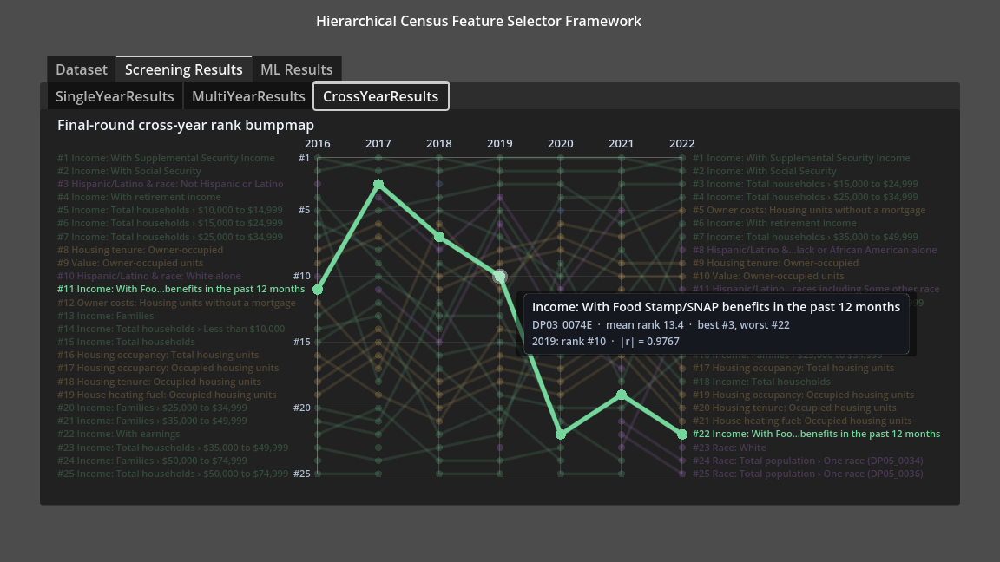
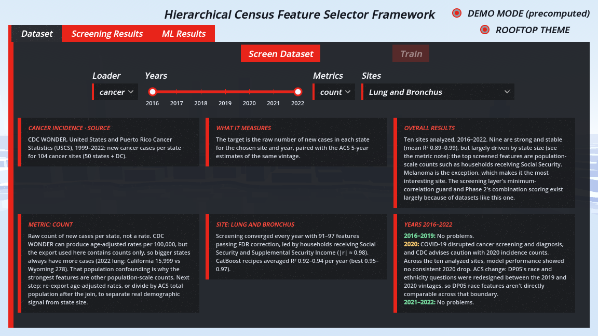
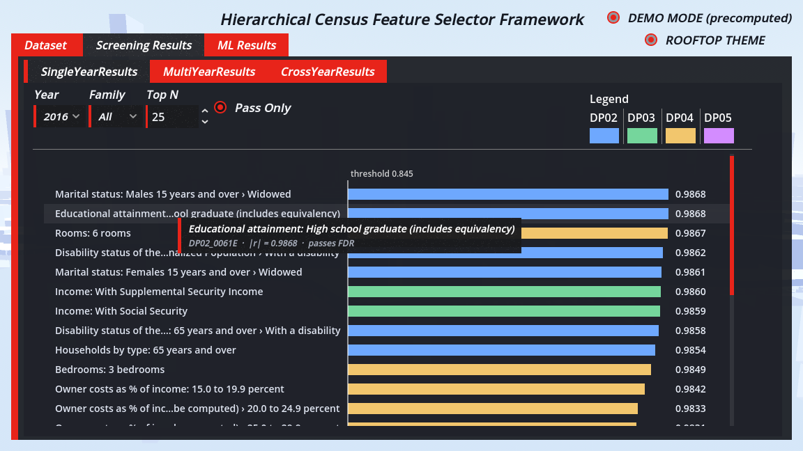
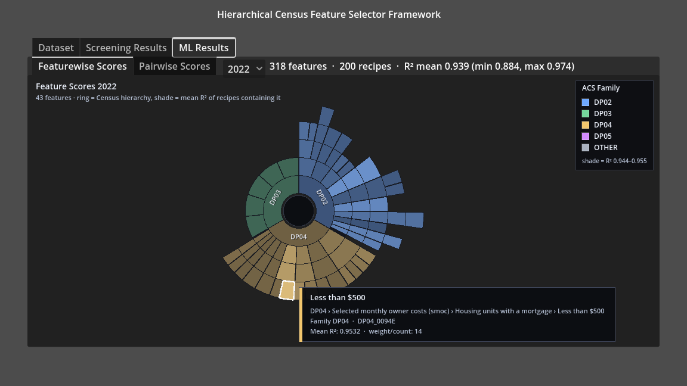
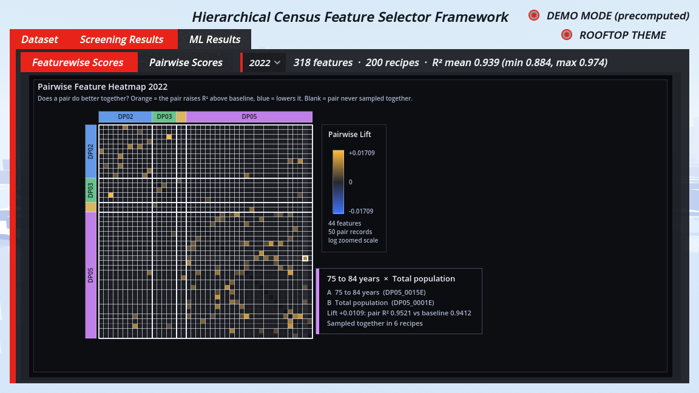

M.S. Computer Science capstone · CSU Fullerton · 2026
Which Census variables actually explain your data?
Give it any state-level dataset (cancer incidence, overdose deaths, UFO sightings) and it finds which of ~528 American Community Survey variables, and which families of variables, best explain it, including ones that only matter in combination.

The problem
Census data is wide: about 528 usable variables per state, but only 51 rows (50 states plus DC). Fit a model on everything and it finds patterns that aren't real.
Simple correlation doesn't work either. Many variables are just restatements of population size, so anything that scales with population correlates with all of them at |r| ≈ 0.99. The useful signal is in which variables still matter together once those are accounted for.
How it works
A three-phase Python pipeline behind two FastAPI services, with a Godot frontend for exploring the results.
Census data server
Pulls ACS 5-year Data Profile tables (about 4,200 variables per geography and year) from the Census API and caches them in DuckDB, so each is downloaded only once.
Statistical screening
Correlates every variable with the target (Pearson and Spearman), corrects for ~500 simultaneous tests with Benjamini–Hochberg FDR, and iterates until the shortlist converges.
Recipe sampling
Scores hundreds of small random feature subsets with cross-validated CatBoost, then aggregates to the feature, family and pair level, surfacing variables that are weak alone but strong together.
Results
Validated on three datasets that relate to the Census in very different ways.
Strong, stable signal. Mean of 200 CatBoost recipes over 318 screened features in 2022 (range 0.884–0.974).
Mean R² near zero, but the best recipes reach about 0.6: real signal exists, but it's sparse.
A stress test. The best recipes fell from 0.80 to 0.04 between 2013 and 2016, traced to a change in how the source releases its data.
Screenshots



